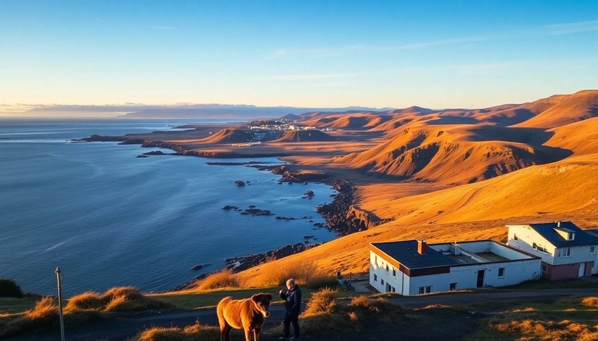

How to Get Around Iceland: Car, Bus & Tour Tips

I landed in Keflavik last June with a loose plan and a rental car reservation. By the end of the trip, I’d learned exactly when a bus beats a car, which tour is worth the money, and why you should never trust Google Maps on a gravel road. Here’s what I wish I’d known before I started driving.
Should you rent a car in Iceland or rely on tours?
If you want to stop on a whim—pull over for a waterfall, chase a rainbow over a lava field—you need a car. I rented a 4x4 from Blue Car Rental at Keflavik Airport, and it paid off the second I hit the gravel spur to Fjaðrárgljúfur canyon. A standard sedan would have been fine for the Ring Road in summer, but anything off the main route demands higher clearance.
That said, tours remove the stress. For the Golden Circle, a bus tour from Reykjavik costs about the same as a day’s rental plus fuel, and you don’t have to navigate the parking chaos at Geysir. I did the Golden Circle as a self-drive and regretted it during the 20-minute wait for a spot at Gullfoss. If you’re only in Iceland for 3-4 days, skip the car and book a guided minibus tour with a company like Reykjavik Excursions. You’ll see more and argue less.
What’s the best way to do the Golden Circle without a car?
The Golden Circle loop—Þingvellir National Park, Geysir, Gullfoss—is the most touristed route in Iceland, and that’s for a reason. It’s compact, scenic, and doable in a single day from Reykjavik.
I took the Reykjavik Excursions Golden Circle Classic bus tour. It picked me up at the BSÍ bus terminal, dropped me at each site for 45-60 minutes, and included an English-speaking guide who pointed out the rift valley at Þingvellir where the Eurasian and North American plates are pulling apart. The bus had Wi-Fi, which mattered more than I’d like to admit.
- Þingvellir National Park: Walk the Almannagjá gorge. It’s free, but parking costs 750 ISK if you drive yourself.
- Geysir: The active Strokkur erupts every 5-10 minutes. Skip the souvenir shop—same tchotchkes as everywhere else.
- Gullfoss: The lower viewing platform gets soaked. Bring a rain jacket, not an umbrella.
The tour cost 10,900 ISK per person (about $80). A rental car for the day would have been similar once you add fuel and parking, but the bus let me nap between stops.
How do you drive the South Coast efficiently?
The South Coast from Reykjavik to Vik is a straight shot on Route 1, but the stops are spread out. I allocated two full days: one to get to Vik, one to return with detours.
Day one: I left Reykjavik at 8 a.m., hit Seljalandsfoss (you can walk behind the waterfall—bring waterproof pants), then Skógafoss (climb the stairs on the right for a view of the coastline). Lunch at Suður-Vík in Vik—the lamb soup is the real deal, not the tourist menu. Afternoon was Reynisfjara black sand beach, which is as dramatic as the photos but windier than you’d believe. Stay away from the waves; sneaker waves are not a joke.
Day two: Backtrack to Fjaðrárgljúfur (the canyon from the Justin Timberlake video, but worth it), then Jökulsárlón glacier lagoon. The Zodiac boat tour there is pricey (12,000 ISK) but the only way to see icebergs up close without a kayak.
- Accommodation tip: Book guesthouses in Hella or Hvolsvöllur, not Vik, unless you want to pay $250 for a room with shared bathroom. I stayed at Hella Guesthouse—basic but clean, with a kitchenette.
- Fuel: Fill up at the N1 in Hvolsvöllur. The station in Vik is 15% more expensive.
When does the bus system actually make sense?
Strætó, Iceland’s public bus network, is reliable on the main routes but useless for spontaneity. I used it only for the Reykjavik City Card day, which includes unlimited bus rides within the capital. The bus from Keflavik Airport to Reykjavik (Route 55) costs 2,280 ISK and takes 45 minutes—cheaper than the FlyBus (3,500 ISK) but runs less frequently.
For longer distances, the Strætó long-distance buses (Routes 51, 52, 57) connect Reykjavik to Akureyri and Egilsstaðir, but they stop at every gas station. I tried the bus from Reykjavik to Vik once. It took four hours because of a detour through Hvolsvöllur. If you’re on a budget and have time to kill, it works. If you value your afternoon, rent a car or book a tour.
What are the hidden costs of driving in Iceland?
The rental price is the appetizer. The main course is insurance, fuel, and tolls.
- Insurance: I added gravel protection (3,000 ISK/day) and sand-and-ash protection (2,500 ISK/day). The gravel protection saved me when a stone chip cracked my windshield on the way to Jökulsárlón. Without it, that’s a 50,000 ISK bill.
- Fuel: Diesel was 330 ISK/liter in Reykjavik, 360 in the countryside. A full tank for a 4x4 costs about 15,000 ISK. The Orkan stations in small towns have the best prices.
- Tolls: The Hvalfjörður Tunnel (Route 1 north of Reykjavik) charges 1,500 ISK per crossing. Pay online within 24 hours or get a fine.
Also: don’t drive F-roads without a proper 4x4. I saw a Hyundai i10 stuck in a river crossing near Landmannalaugar. The rental company will charge you a recovery fee that exceeds your credit card limit.
FAQ
Is it safe to drive the Ring Road in winter? Only if you have experience with snow and ice. The roads are plowed, but black ice is common, and daylight lasts 4-5 hours. I did it in January once and swore I’d never do it again. Book a guided tour instead—companies like Arctic Adventures run winter packages with studded tires and a driver who knows the roads.
How much does a typical tour cost in Iceland? A full-day Golden Circle bus tour runs 10,000-12,000 ISK per person. South Coast tours are 15,000-18,000 ISK. Glacier hiking or ice cave tours add another 15,000-20,000 ISK. Budget 40,000 ISK per person for two tours—that’s about $300.
Can you use Uber or taxis in Reykjavik? No Uber. Taxis are available but expensive—a 10-minute ride in Reykjavik costs 2,500-3,500 ISK. The Hopp electric scooter app is a better bet for short trips, and the city bus covers everything else.
Conclusion
- Rent a 4x4 if you want freedom and plan to leave Route 1, but add gravel and sand insurance.
- Book a guided tour for the Golden Circle and South Coast if you’re short on time or don’t want to deal with parking.
- Use Strætó buses only for Reykjavik city travel or budget long-distance trips with flexible schedules.
- Fill up fuel in towns, not at remote stations, and always carry a paper map—cell service drops in the highlands.
- Skip winter self-drives unless you’re experienced in icy conditions; tours are safer and less stressful.